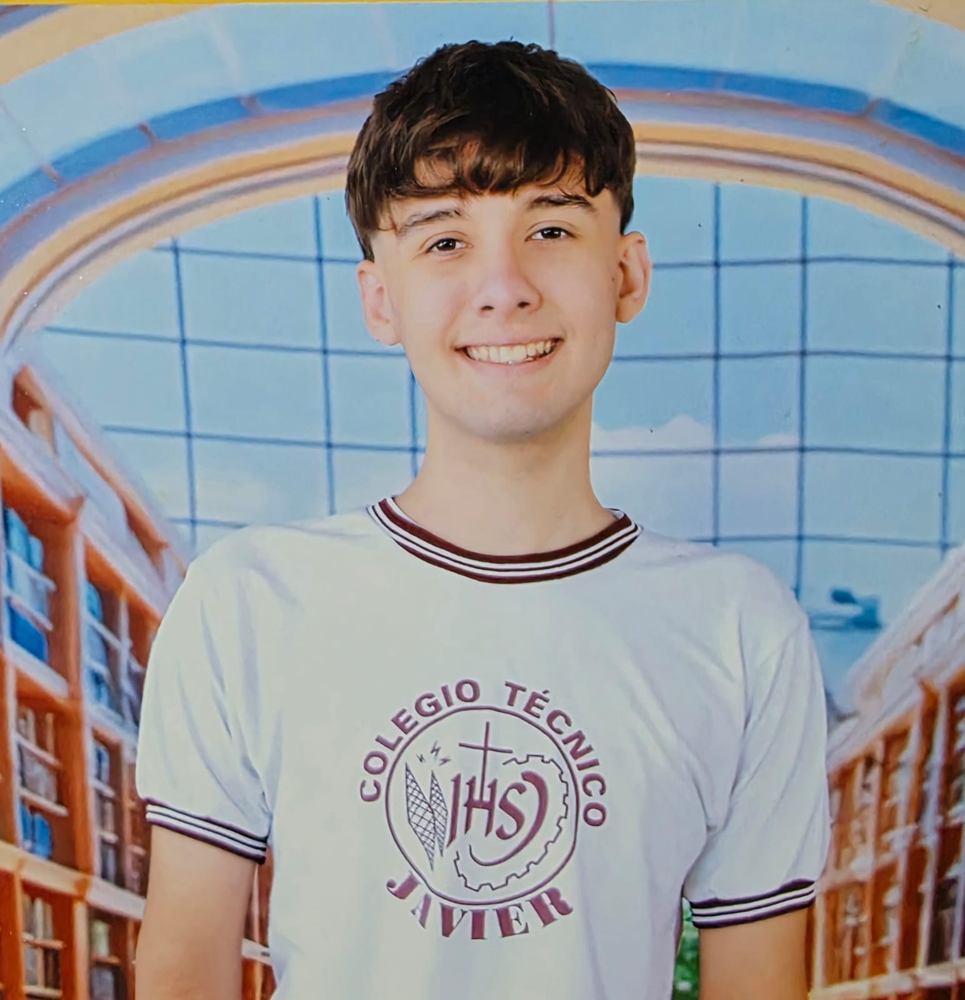
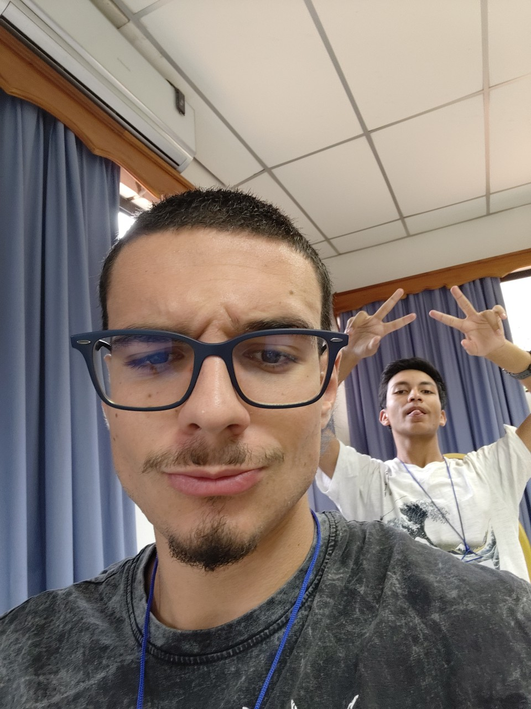
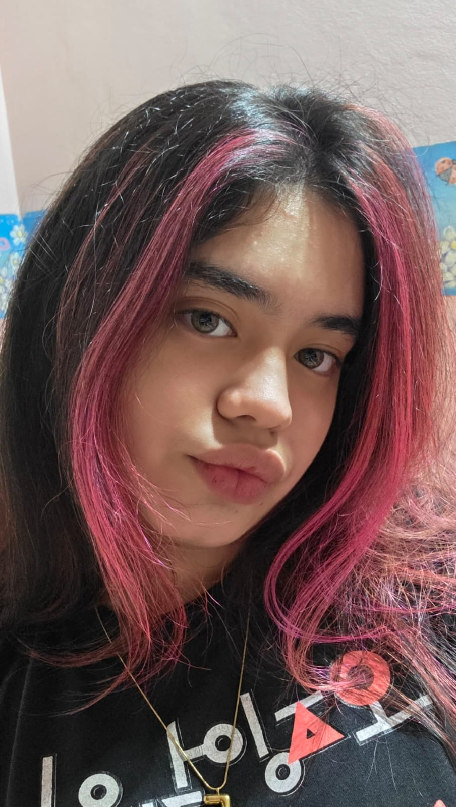
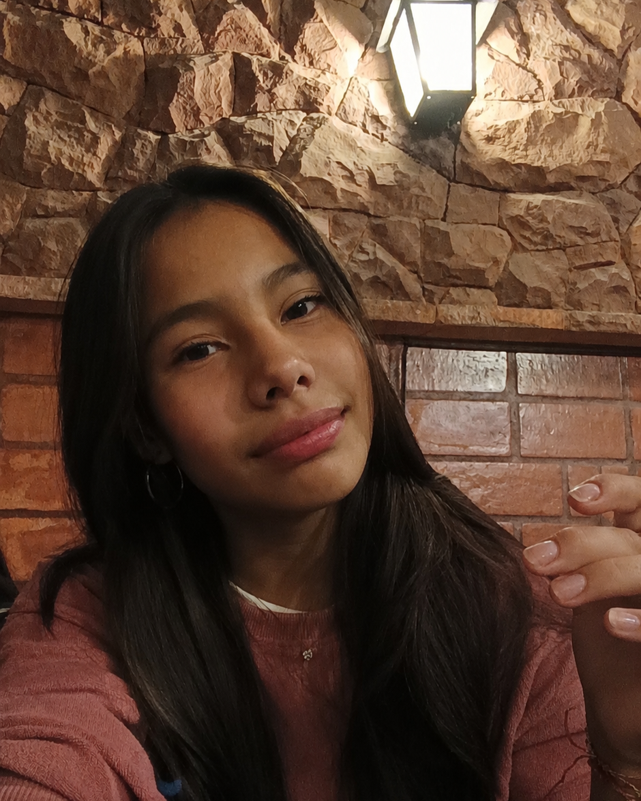
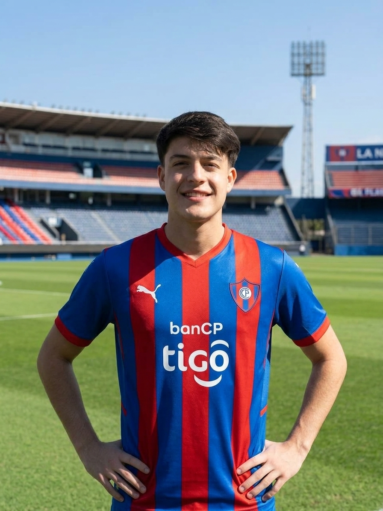

Durante mi visita al colegio San Cayetano pude ver que hay chicos que pasan por momentos difíciles y que a veces les falta el apoyo de sus padres. Pero también me gustó ver cómo los profesores se preocupan por sus alumnos y cómo los mismos compañeros se ayudan entre sí. Esto me hizo entender que un pequeño gesto puede significar mucho para otra persona y que, si nos apoyamos entre todos, se puede hacer una gran diferencia.
Mi experiencia fue muy linda; todas las actividades fueron bien recibidas por todos los niños y todos se divirtieron, sobre todo por el entusiasmo que ellos tenían. Me gustó mucho la idea inicial de compartir algo con los menos afortunados, ya que se siente satisfactorio ser parte de algo bueno para la comunidad. La parte más sorprendente de esta experiencia fue ver cómo muchísimos chicos y niños me hicieron preguntas con respecto a mi cultura, y eso me hizo darme cuenta de que, a pesar de nuestras diferencias, nada puede alejarnos como personas.
Esta actividad me gustó mucho, me divertí bastante compartiendo y jugando con los niños. Aprendimos y aplicamos muchos valores ignacianos como la empatía, la humildad y el respeto; también observamos realidades distintas a las nuestras. Fue una experiencia muy linda y enriquecedora. Todos los niños nos recibieron de la mejor manera, al igual que los profesores y directivos del lugar. La verdad disfruté mucho y me encanta que en el colegio hagamos este tipo de actividades para aprender cosas nuevas
Mi experiencia en San Cayetano fue muy linda y significativa, porque tuve la oportunidad de compartir momentos con los niños, divertirme y hablar con ellos. Disfruté mucho verlos reír, divertirse y participar en las actividades. Al estar en «Cuentacuentos» y «Refuerzo de matemáticas», comprendí mejor las distintas realidades que se viven en el país. Esta experiencia me enseñó la importancia de la solidaridad, la paciencia y el cariño hacia los demás. Me quedé con la felicidad de haber aportado un poquito de diversión a su día y con el recuerdo de sus risas y travesuras, que hicieron que cada momento valiera la pena.
Para mí, este proyecto fue mucho más que cumplir con nuestras obligaciones académicas. Fue la oportunidad de compartir el conocimiento y el espíritu de servicio que nos inculca el colegio con los estudiantes de esta institución. Me llena el corazón de alegría haber vivido esta experiencia junto a ellos, verlos reír y jugar. Además, conocer de cerca su realidad me genera un profundo deseo de seguir apoyándolos, pues son niños enormemente talentosos e inteligentes.
Este proyecto nos permitió conocer las escuelas de Fe y Alegría y compartir nuevas experiencias. Fue una oportunidad para aprender, conocer otras realidades y valorar la importancia de trabajar juntos para generar cambios positivos. Sin duda, fue una experiencia que nos dejó muchos aprendizajes y buenos recuerdos.
Fue una experiencia maravillosa. Tuve la oportunidad de conocer a personas encantadoras que, con gran amabilidad, me contaron sobre sus vidas y cómo es el día a día en la escuela, tanto los aspectos positivos como los negativos. También pude probar una deliciosa torta casera, preparada por los propios estudiantes en su taller de cocina, y justo después presencié un emocionante partido de fútbol entre mis compañeros y otros alumnos. Aprendí sobre las dificultades de vivir en el Bañado Sur, así como sobre el temor a que ocurran actos de delincuencia dentro o fuera de la propia escuela. Me contaron el caso de un estudiante de segundo año que trabaja como guardia durante el turno de noche, lo cual le dificulta asistir a clase. Otro alumno, que vive en Costanera Sur, llega a la escuela caminando —sin utilizar transporte público—, lo que le toma entre 40 y 50 minutos. Los chicos realmente adoran su escuela; me alegra mucho que podamos brindarles ayuda y apoyo, para que así sigan sintiendo ese cariño por el centro educativo y continúen asistiendo a clases. Esta ha sido una de mis visitas escolares favoritas hasta la fecha.